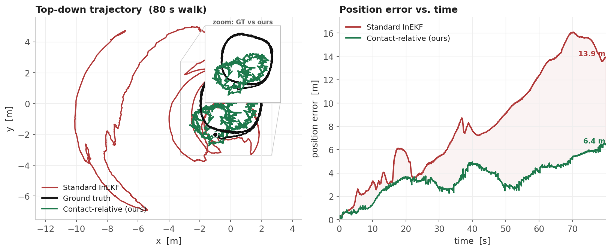

Abstract
Contact-aided Invariant EKF is the workhorse of legged state estimation: it pins each stance foot as a fixed point landmark and fuses the constraint with the IMU. That assumption holds for a small, point-like foot — but a wearable exoskeleton has a broad, flat sole. As the foot rolls heel-to-toe, the true contact point migrates across the sole, so the "fixed" landmark is actually moving. The filter mistakes this for body motion, the gyro bias runs away, and the absolute pose diverges by tens of metres over a single walk.
We fix it without adding any new sensor. Instead of pinning the foot in the world, we measure the body's motion relative to the stance foot and fuse it with a left-invariant single-clone SLAM update. The stance foot's (unknown, drifting) world pose cancels exactly, so the measurement lives entirely in the observable directions — no absolute yaw, no camera, only the existing encoders and IMU.
The Problem
The contact-aided InEKF treats each planted foot as a single world-fixed point and corrects the filter so that point has zero velocity. For a wide, flat exoskeleton sole the contact region sweeps from heel to toe during stance — the effective landmark slides several centimetres per step while the filter believes it is nailed down. Those false "zero-velocity" pseudo-measurements inject a steady error into the unobservable yaw / gyro-bias subspace, which compounds into runaway divergence.
Method
While a foot is planted, its world position $f_w$ is constant, so the body satisfies $f_w = p_{wb} + R_{wb}\,p_{bf}$ at every instant ($p_{bf}$ is the foot position in the body frame, straight from the leg encoders). Subtracting two consecutive frames, the foot world position drops out and the body's relative motion is:
$\Delta R$ comes from integrating the gyro over the window — an independent proprioceptive source. Crucially, a common world-frame yaw applied to both frames leaves $\Delta p$ and $\Delta R$ unchanged: the measurement carries no absolute yaw or position, exactly the directions a contact+IMU system cannot observe. It is fused through the left-invariant single-clone SLAM update, which constrains the body against a snapshot ("clone") of its own pose rather than against the world.
The relative update is numerically delicate; three choices turned a diverging prototype into a robust estimator:
The relative correction replaces the absolute point-contact landmark update; the underlying SE${}_K$(3) right-invariant filter and the C++ relative-SLAM backend are reused unchanged.
Results
Controlled offline ablation on a 12-DOF WalkOnSuit exoskeleton in Isaac Gym: identical recorded IMU + encoder + contact streams drive both filters, toggling only the correction. We report final position error after each 80 s walk across three distinct trajectories.

Mean final position error over N = 3 distinct trajectories — a 2.2× reduction, no explosions.
| Trajectory | Standard InEKF | Contact-relative | Improvement |
|---|---|---|---|
| walk A | 13.91 m | 6.43 m | 2.2× |
| walk B | 17.90 m | 5.99 m | 3.0× |
| walk C | 10.04 m | 7.36 m | 1.4× |
| Mean | 13.95 m | 6.59 m | 2.2× |
Numbers are from a controlled ablation with clean recorded foot kinematics. In live deployment the standard filter degrades much further (kilometre-scale drift), which originally motivated this work.
Citation
@misc{park_contact_relative_inekf,
title = {Contact-Relative Invariant EKF: Rescuing State Estimation
for Wide-Footed Wearable Robots},
author = {Park, Jinsu},
year = {2026},
note = {Project page},
}